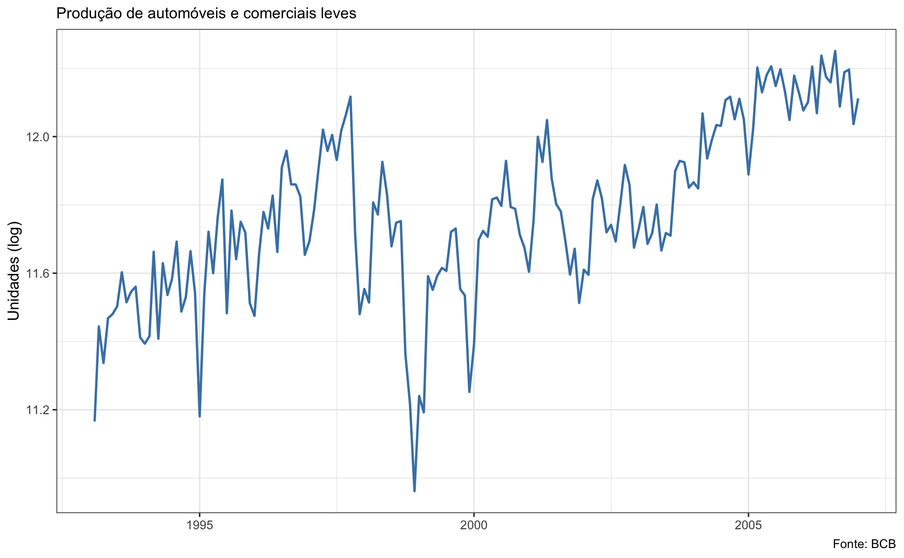
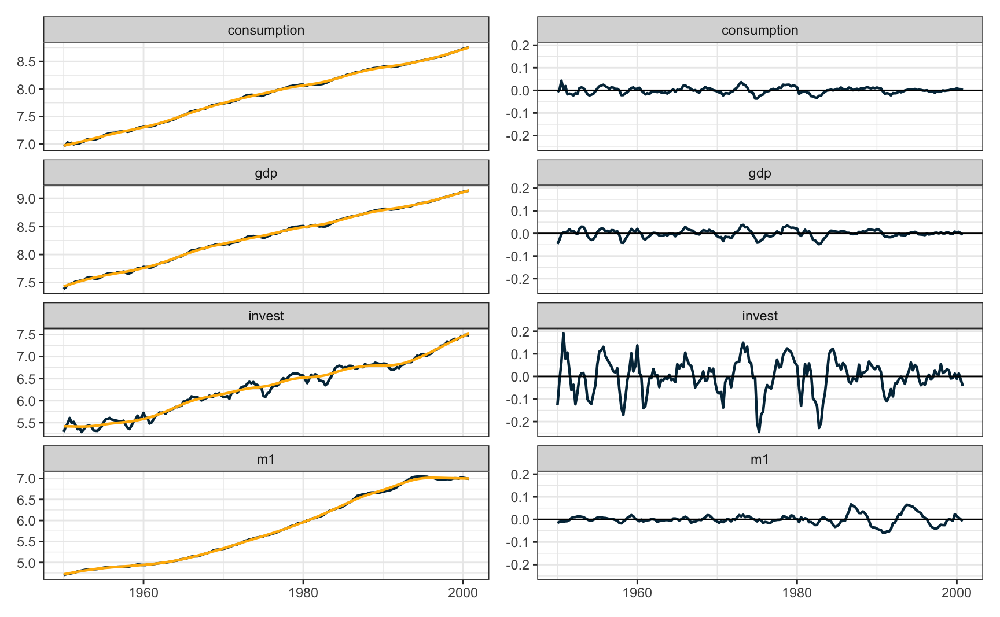
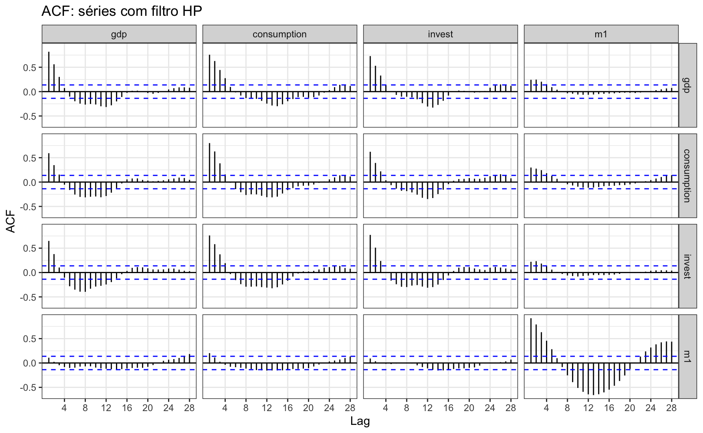

Tendências em séries econômicas
Uma tarefa rotineira em pesquisa econômica é de encontrar tendências e ciclos em séries de tempo macroeconômicas. Dada uma série de tempo \(y_t\), tenta-se encontrar alguma decomposição que resulte em \(y_t = \text{cycle}_t + \text{trend}_t + \text{remainder}_t\). Diferentes teorias e abordagens foram levantadas para extair as tendências de curto e longo prazo de séries.
De maneira geral, há dois tipos de tendências: (1) tendências determinísticas e (2) tendências estocásticas. A forma mais simples de tendência determinística é de uma tendência temporal linear. Algo na forma \[ y_t = \alpha_{0} + \alpha_{1}t + u_{t} \].
Já o exemplo mais simples de série com tendência estocástica é um random-walk
\[ y_t = y_{t-1} + u_{t} \]
O gráfico abaixo mostra a produção de automóveis no Brasil entre 1993 e 2007. Os dados são da Anfavea e baixados no R via API do Banco Central. A série não foi ajustada sazonalmente.
O painel abaixo mostra as séries sem tendência e o gráfico de autocorrelação parcial do resíduo do ajuste. Note que é possível perceber visualmente a presença de uma componente sazonal que permanece na série. Os resíduos do ajuste com polinômio de terceiro grau ainda apresentam bastante autocorrelação, sugerindo que a série não é tendência-estacionária. O ajuste na primeira diferença parece ser mais adequado neste caso.

Uma abordagem bastante comum para encontrar a tendência/ciclo em séries macroeconômicas é o filtro Hodrick-Prescott (HP). O filtro HP separa uma série em suas componentes de tendência e ciclo. Sua formulação matemática baseia-se na minimização de uma função objetivo que busca encontrar uma estimativa suave da tendência subjacente, ao mesmo tempo em que penaliza variações abruptas.
Filtro HP
O filtro HP separa uma série em suas componentes de tendência e ciclo. Sua formulação matemática baseia-se na minimização de uma função objetivo que busca encontrar uma estimativa suave da tendência subjacente, ao mesmo tempo em que penaliza variações abruptas.
Formulação do Problema de Minimização
Dada uma série temporal \(y_t\), o objetivo é encontrar uma tendência \(g_t\) que minimize a seguinte função objetivo:
\[ \min_{g_t} \left[ \sum_{t=1}^{T} \left( y_t - g_t \right)^2 + \lambda \sum_{t=2}^{T-1} \left( g_{t+1} - 2g_t + g_{t-1} \right)^2 \right] \]
O primeiro termo representa a soma dos quadrados dos resíduos entre a série observada e a estimativa da tendência, enquanto o segundo termo é uma penalidade que desencoraja variações abruptas na tendência. O filtro HP suaviza a série observada, permitindo identificar movimentos de longo prazo enquanto remove flutuações de curto prazo. O parâmetro \(\lambda\) desempenha um papel crucial na determinação do nível de suavização da tendência, com valores maiores resultando em tendências mais suaves.
Note que se \(\lambda = 0\) o valor ótimo de \(g_{t}\) é simplesmente \(y_{t}\). Quando \(\lambda \to \infty\) o componente \(g_{t}\) se aproxima de uma tendência temporal linear. A escolha de \(\lambda\) não é simples e é usual amparar-se em regras de bolso. Para séries trimestrais, costuma-se usar \(\lambda = 1600\); para séries mensais \(\lambda = 14400\)1.
Apesar de ter sido desenvolvida para séries macroeconômicas, não há problema, em princípio, em aplicar o filtro HP a qualquer tipo de série. O gráfico abaixo mostra o resultado da aplicação do filtro HP à série de produção de veículos.

Random-walk
O passeio aleatório é um processo estocástico comum em economia. Variáveis importantes como preços futuros, preços de ações, preços de petróleo, conusmo, inflação, e a taxa de crescimento do estoque de moeda podem ser modeladas como passeios aleatórios.
Seja um passeio aleatório \((1-L)y_{t} = u_{t}\) com \(T\) observações e frequência trimestral, onde \(L\) é o operador defasagem usual: \(Lx_{t} = x_{t-1}\). Segundo Hamilton (2017), Quando se aplica o filtro HP sobre \(y_{t}\) encontra-se o seguinte termo de ciclo, \(c_t\)
\[ c_{t} = \frac{\lambda(1-L)^3}{F(L)}u_{t+2} \]
Usando \(\lambda = 1600\), a sugestão usual para séries trimestrais,
\[ c_t = 89.72 \{ - q_{0,t+2} + \sum^{\infty}_{j=0} (0.8941)^j[\cos(0.1117j)+8.916\sin(0.1117j)](q_{1,t+2-j} + q_{2,t+2+j}) \} \]
onde
\(q_{0t} = \varepsilon_t - 3\varepsilon_{t-1} + 3\varepsilon_{t-2} - \varepsilon_{t-3}\)
\(q_{1t} = \varepsilon_t - 3.79\varepsilon_{t-1} + 5.37\varepsilon_{t-2} - 3.37\varepsilon_{t-3} + 0.79\varepsilon_{t-4}\)
\(q_{2t} = -0.79\varepsilon_{t+1} + 3.37\varepsilon_t - 5.37\varepsilon_{t-1} + 3.79\varepsilon_{t-2} - \varepsilon_{t-3}\)
que é uma expressão bastante longa. O importante a se notar é que o termo \(c_{t}\) tem uma estrutura recursiva em função das defasagens de \(\varepsilon_t\). Note que a série subjacente é simplesmente uma soma de ruídos aleatórios sem nenhum padrão:
\[ \begin{align} (1-L)y_{t} & = \varepsilon_{t} \\ y_{t} & = \frac{\varepsilon_{t}}{(1-L)} \\ y_{t} & = \sum_{i = 0}^{\infty}e_{i} \end{align} \]
mas o ciclo desta série tem uma estrutura artifical, que foi acrescentada pelo uso do filtro HP. Em linhas gerais, a exposição acima resume o argumento de Hamilton contra o uso indiscriminado do filtro HP em séries macroeconômicas não-estacionárias. O filtro HP acaba “criando” uma estrutura nos dados que não existia previamente.
Code
set.seed(1984)
y <- ts(cumsum(rnorm(100)), frequency = 4)
hpy <- hpfilter(y, freq = 1600, type = "lambda")
tbl_hp <- tibble(
date = as.numeric(time(y)),
cycle = as.numeric(hpy$cycle),
trend = as.numeric(hpy$trend),
series = as.numeric(y)
)
p1 <- ggplot(tbl_hp, aes(x = date)) +
geom_line(aes(y = series), lwd = 0.8, color = "#023047") +
geom_line(aes(y = trend), lwd = 0.8, color = "#ffb703") +
labs("Filtro HP aplicado no Random Walk", subtitle = "Série e Tendência", x = NULL, y = NULL) +
theme_bw()
p2 <- ggplot(tbl_hp, aes(x = date)) +
geom_line(aes(y = cycle), lwd = 0.8, color = "#023047") +
labs(x = NULL, y = NULL, subtitle = "Ciclo") +
theme_bw()
p1 / p2
Séries macroeconômicas
Para um exemplo mais aplicado, vamos usar a base USMacroG do pacote {AER}. O código abaixo aplica o filtro HP sobre o logaritmo das séries trimestrais do PIB, consumo, investimento e M1. As séries são todas completas com 204 observações entre 1950 e 2000.
O gráfico mostra o ajuste do filtro HP em cada uma das quatro séries.
Code
library(AER)
data("USMacroG")
macro <- tibble(
date = zoo::as.Date.ts(USMacroG),
as.data.frame(USMacroG)
)
macro <- macro |>
mutate(across(gdp:m1, log))
nest_macro <- macro |>
select(date, gdp, consumption, invest, m1) |>
pivot_longer(col = -date, names_to = "name_series") |>
group_by(name_series) |>
nest()
macro_hp <- nest_macro |>
mutate(hpy = map(data, \(x) {
y <- ts(x$value, frequency = 4, start = c(1950, 1))
hp <- hpfilter(y, freq = 1600, type = "lambda")
tibble(
cycle = as.numeric(hp$cycle),
trend = as.numeric(hp$trend)
)
})) |>
unnest(c(data, hpy)) |>
ungroup()
p1 <- ggplot(macro_hp, aes(x = date, y = value)) +
geom_line(aes(y = value), lwd = 0.8, color = "#023047") +
geom_line(aes(y = trend), lwd = 0.8, color = "#ffb703") +
facet_wrap(~name_series, scales = "free_y", ncol = 1) +
labs(x = NULL, y = NULL)+
theme_bw()
p2 <- ggplot(macro_hp, aes(x = date, y = cycle)) +
geom_line(lwd = 0.8, color = "#023047") +
geom_hline(yintercept = 0) +
facet_wrap(~name_series, ncol = 1) +
labs(x = NULL, y = NULL) +
theme_bw()
p1 + p2
A análise das autocorrelações mostra que há bastante autocorrelação cruzada entre as séries.

Se tivéssemos assumido, contudo, que as séries são I(1), não haveria muita correlação cruzada entre as séries.
The HP cyclical components of stock prices and consumption are both extremely predictable from their own lagged values as well as each other. The rich dynamics in these series are purely an artifact of the filter itself and tell us nothing about the underlying data- generating process.

Hamilton
Como alternativa ao filtro HP Hamilton (2017) sugere um procedimento bastante simples. Seja \(y_t\) uma série não-estacionária. Então fazemos uma regressão linear de \(y_{t+h}\) contra os \(p\) valores mais recentes.
\[ y_{t+h} = \beta_0 + \beta_{1} y_{t} + \beta_{2} y_{t-1} + \beta_{3} y_{t-2} + \beta_{4} y_{t-3} + u_{t+h} \]
Para o caso específico de dados trimestrais, ele sugere uma formulação do tipo:
\[ y_{t} = \beta_0 + \beta_{1} y_{t-8} + \beta_{2} y_{t-9} + \beta_{3} y_{t-10} + \beta_{4} y_{t-11} + u_{t+h} \]
Ou, alternativamente, um modelo ainda mais simples, em função apenas de \(y_{t-8}\) na forma:
\[ y_{t} = \beta_0 + \beta_{1} y_{t-8} + u_{t+h} \]
De modo geral, Hamilton argumenta que este filtro garante a estacionaridade de séries, sendo elas tendência-estacionárias ou diferença-estacionárias. Mais detalhes sobre o filtro podem ser verificados no Working Paper.
# A tibble: 772 × 4
id name_series trend resid
<dbl> <chr> <dbl> <dbl>
1 12 gdp 7.53 0.0375
2 13 gdp 7.54 0.0440
3 14 gdp 7.57 0.0282
4 15 gdp 7.59 0.00113
5 16 gdp 7.59 -0.0127
6 17 gdp 7.60 -0.0329
7 18 gdp 7.60 -0.0337
8 19 gdp 7.61 -0.0294
9 20 gdp 7.65 -0.0470
10 21 gdp 7.66 -0.0289
# ℹ 762 more rows# A tibble: 784 × 4
id name_series trend_rw resid_rw
<dbl> <chr> <dbl> <dbl>
1 9 gdp 7.46 0.0701
2 10 gdp 7.49 0.0416
3 11 gdp 7.53 0.0104
4 12 gdp 7.55 0.0254
5 13 gdp 7.56 0.0326
6 14 gdp 7.57 0.0241
7 15 gdp 7.59 -0.00190
8 16 gdp 7.59 -0.0199
9 17 gdp 7.61 -0.0363
10 18 gdp 7.61 -0.0356
# ℹ 774 more rowsFootnotes
Para uma discussão sobre a escolha de \(\lambda\) em séries macroeconômicas, veja Ravn e Uhlig (2002)↩︎